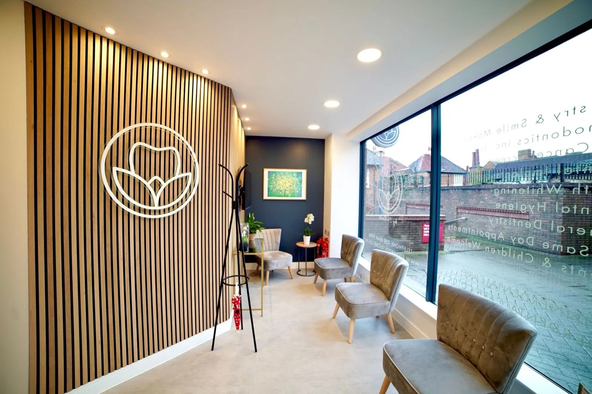
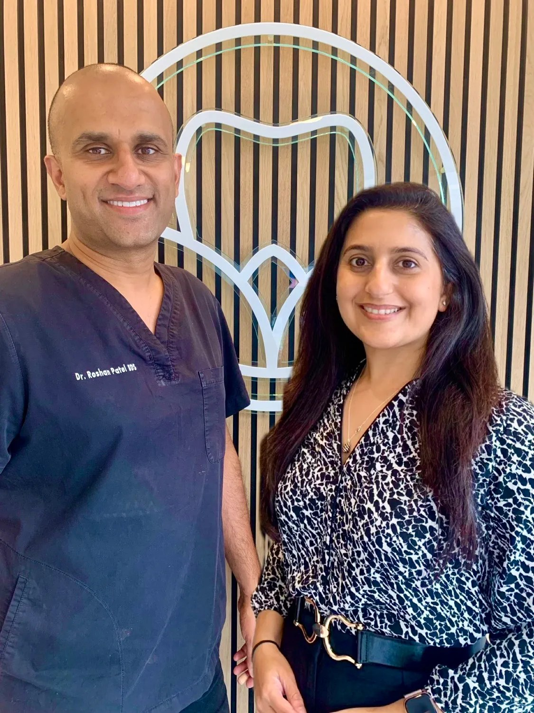
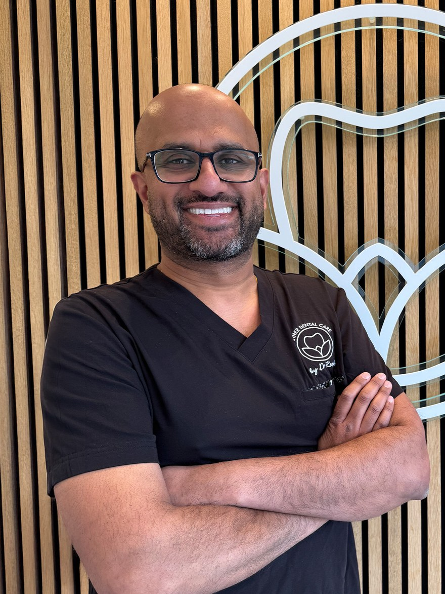
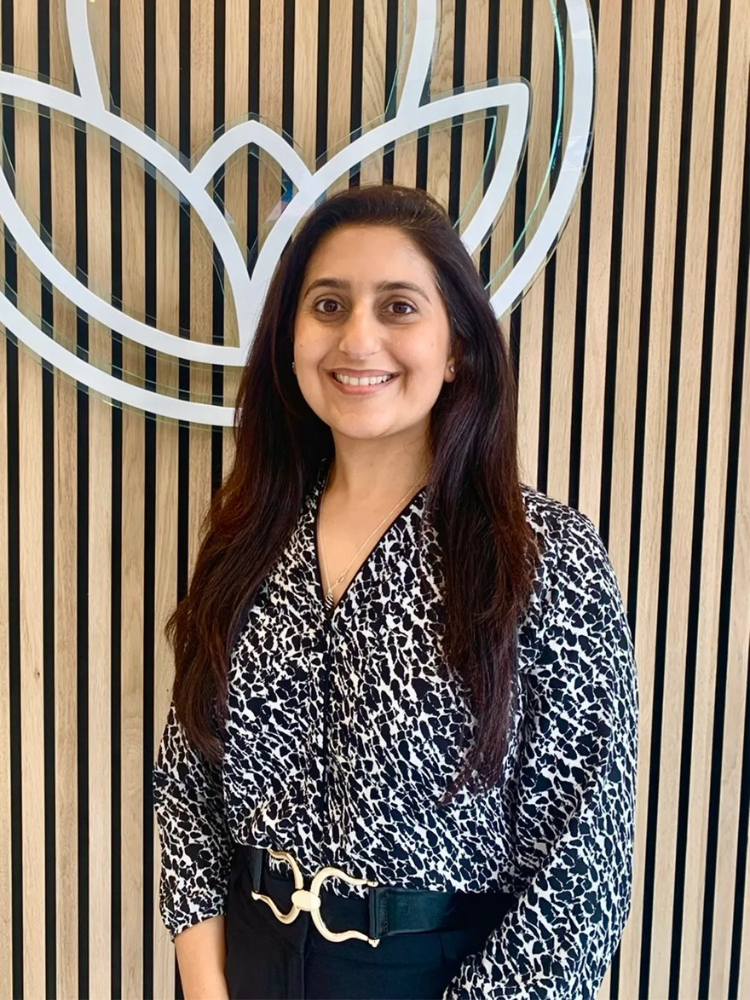
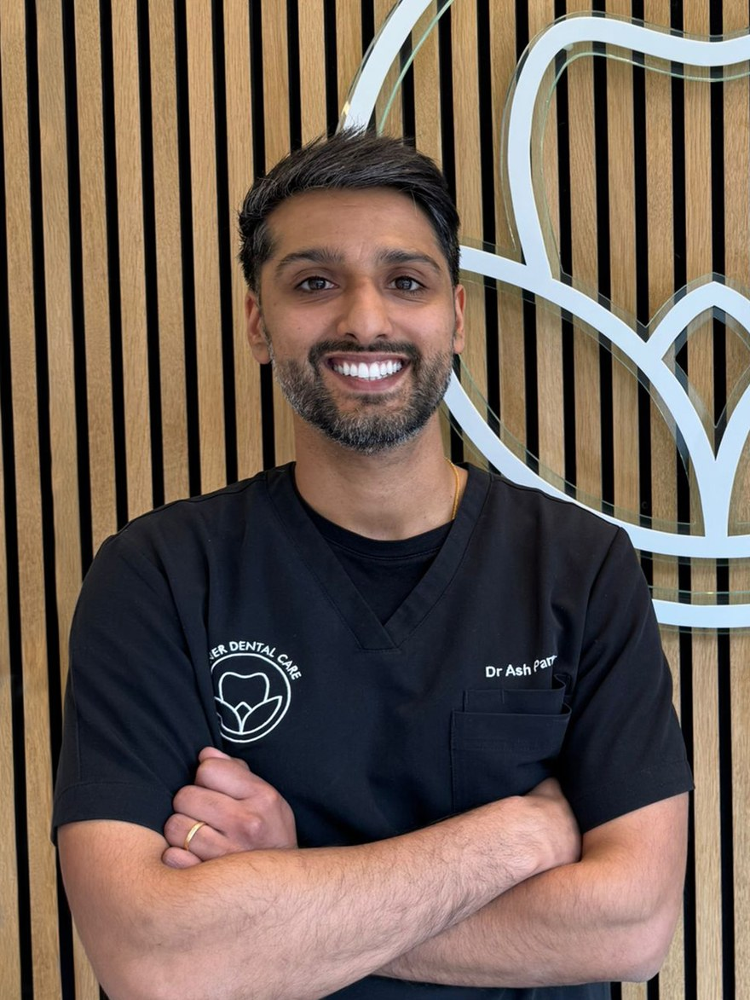

Routine dental care
Check-ups designed to keep teeth and gums healthy, catch problems early, and give you confidence that your smile is in safe hands.
Private dentist in Pinner
From routine check-ups and hygiene care through to oral surgery, dental implants and smile makeovers — personalised dentistry in a calm, welcoming practice on Barters Walk.

The practice
Pinner Dental Care was founded by husband-and-wife team Dr Rosh and Rupal Patel, with a clear aim: a practice where every patient feels genuinely cared for — clinically, personally and professionally.
Patients come from Pinner, Harrow, Northwood, Ruislip, Hatch End and across North West London.

Treatments
A full range of treatment, from routine appointments through to implants, orthodontics and smile makeovers.
Check-ups designed to keep teeth and gums healthy, catch problems early, and give you confidence that your smile is in safe hands.
Preventative and restorative care to keep teeth and gums healthy for life — from endodontics to fillings, with a gentle, patient-first approach.
Hygiene appointments alongside routine care, as part of keeping long-term oral health on track.
Tailored cosmetic treatment — whitening, composite bonding, veneers and complete smile makeovers.
Straightening with Invisalign and ceramic options, for adults as well as younger patients.
Implant treatment for replacing missing teeth, and wider smile restoration.
The people
Pinner Dental Care was founded by Dr Rosh and Rupal Patel — he leads the clinical side, she runs the practice. Dr Ash Parmar is one of the clinicians working alongside them.



The practice’s wider team of clinicians and support staff is listed on their own site.
Ring the practice, or book online through their secure portal. If something has broken or started hurting outside opening hours, there is a separate number.